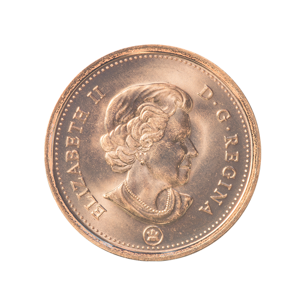
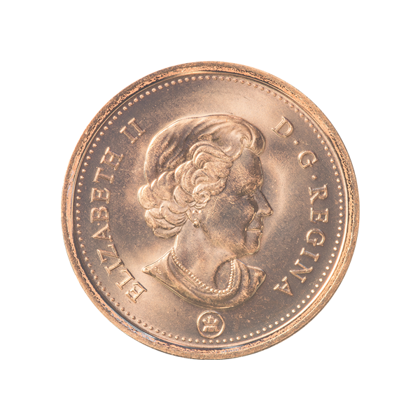

Кленовый лист
Артикул: 765432812-25
Альбрехт Дюрер — немецкий живописец, гравёр и график, один из величайших мастеров западноевропейского Ренессанса. Признан крупнейшим европейским мастером ксилографии, поднявшим её на уровень настоящего искусства.
Аверс: В центре цветное изображение гравюры Альбрехта Дюрера — Носорог. Вверху надпись «Old Master Prints». Внизу выгравировано имя художника «Albrecht Durer» и год чеканки 2013.
Вверху аверса находится надпись MASTERPIECES OF ART. В центре цветное изображение картины нидерландского художника Винсента ван Гога Звёздная ночь. Вставки из 16 кристаллов Сваровски. Внизу год чеканки и имя художника.
Цена: 2 300 ₽
| Год | 2012 |
| Номинал на монете, ед. нац. валюты | 3 рубля |
| Страна-эмитент | Российская Федерация |
| Качество чеканки | PR |
| Металл | Серебро 925 проба |
| Масса хим. драгоценного металла в монете, гр | 6 г |